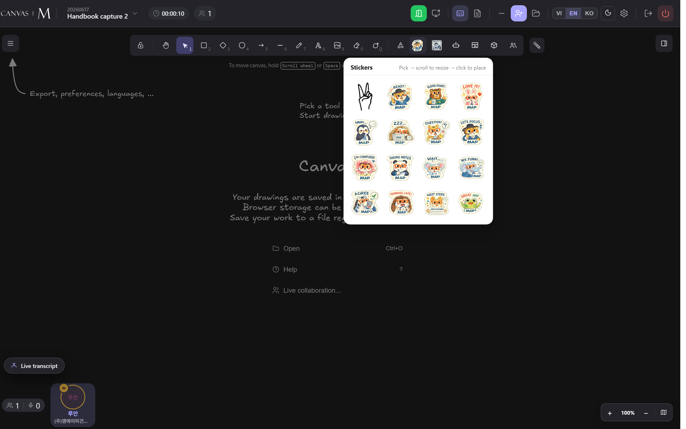
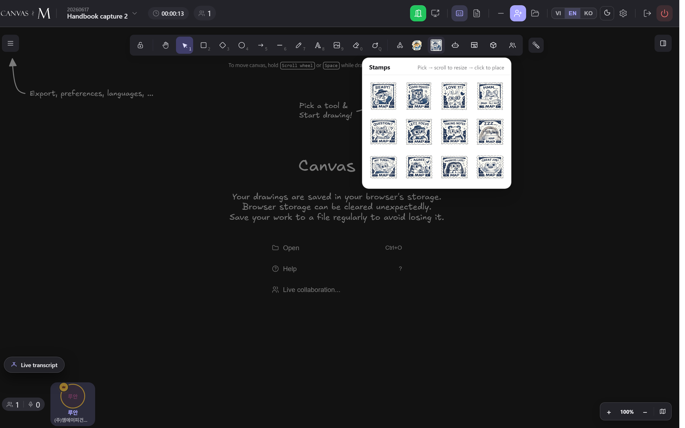

Decorate & annotate
Stickers, stamps, revision clouds, and author badges turn a working canvas into a marked-up one. This chapter covers every decoration tool a participant can reach — where the buttons live, how placing mode behaves, and what each one leaves behind on the shared scene.
Where the decoration tools live
Canvas M adds its decoration controls straight into the Excalidraw toolbar, sitting next to the shape buttons rather than in a separate panel. Look for the small strip of extra buttons: a Stickers button (a colourful character icon), a Stamps button, and a people-shaped Show authors toggle.
These three buttons share one host strip, so on a narrow screen they stay grouped as a single horizontal row instead of stacking into full-width buttons. The revision-cloud tool is different: it is a regular drawing tool in the main shape row, reachable with the keyboard shortcut Q.
Decoration tools that create canvas content — stickers, stamps, the bot, and text translation — are hidden when you open a finished meeting in review mode. A completed meeting is immutable and extract-only, so the buttons simply do not appear. The Show authors toggle stays available so you can still see who wrote what.
Drop a sticker on the canvas
- Click the Stickers button in the toolbar. A popover opens showing a grid of chibi-animal stickers.
- Read the hint at the top of the popover: Pick → scroll to resize → click to place.
- Click any sticker tile. The popover closes and a translucent ghost of the sticker starts following your pointer.
- Move over the canvas — the ghost previews the exact size and shows a live width × height readout.
- Scroll the mouse wheel to resize before you commit (scroll up = bigger, down = smaller).
- Click once on the canvas to drop the sticker at that point.
- Press Esc at any time to cancel placing mode without dropping anything.
→ The sticker lands centred on your click and becomes a normal image element — free-floating, selectable, movable, and synced to everyone in the room.
Stickers and stamps work with a mouse, a trackpad, an Apple Pencil, a Surface Pen, or a touch finger — placing mode is built on pointer events, so all input types behave the same. With a pen, the ghost preview is offset slightly so it sits next to the stylus tip instead of under your hand.

Sizing the ghost before you click
Scroll down to shrink. The smallest the wheel allows is 12% of the base size.
Every pick starts at 100%. Base size is capped at 240px on the longest edge.
Scroll up to grow, up to 6× the base size. The readout updates as you scroll.
The ghost is true WYSIWYG: it is drawn at the on-canvas scene size multiplied by your current zoom, so the floating preview is exactly what lands when you click. The corner readout (e.g. 180 × 180) is the scene size in canvas pixels, not screen pixels.
Stamp an image so the mark travels with it
- Click the Stamps button. A popover opens with a 12-tile grid of postal-style stamps.
- Click a stamp tile, then scroll to size and click on the canvas — exactly like a sticker.
- To attach a stamp to an image, drop it directly on top of that image.
- Drag the underlying image afterwards — the stamp moves with it.
→ A stamp dropped on top of an image adheres to it: the two are grouped, so dragging, selecting, or copying one carries the other. It behaves like a real rubber stamp on a photo. A stamp dropped on empty canvas stays free-floating, just like a sticker.
The topmost image under your click wins the binding. Canvas M skips its own anchor images (PDF and DXF views own their navigation toolbars) and skips other stamps — stamping a stamp does nothing, since you would just delete the old one. To detach a stamp later, select the group and use Excalidraw's Ungroup.

Cloud an area and attach a note
- Pick the revision-cloud tool from the shape row, or press Q.
- Drag a rectangle over the area you want to flag. On release, the rectangle becomes a scalloped cloud outline.
- A toast appears: Click where you want to place the note.
- Click anywhere on the canvas. A text note reading Note drops at that spot.
- An arrow is drawn from the note to the nearest scallop of the cloud, and all three pieces are grouped together.
- Double-click the Note text to edit it; the arrow stays tethered as you move the note.
→ You get a grouped revision marker — cloud, note, and connecting arrow — inherited from the colour, stroke width, roughness, and opacity that were active when you drew. Everything is synced to the room as standard canvas elements.
A single click (no drag) leaves nothing behind — the placeholder is dropped silently. The note inherits your current font so typed text, including Vietnamese, renders correctly. The cloud, the arrow, and the note are all selected together right after creation, so you can move the whole marker as a unit immediately.
Decoration tools at a glance
| Tool | Where | Shortcut | Leaves behind | Synced? |
|---|---|---|---|---|
| Stickers | Toolbar extras strip | — | Free-floating image | Yes |
| Stamps | Toolbar extras strip | — | Image, grouped to the image beneath it | Yes |
| Revision cloud | Shape row | Q | Cloud + arrow + Note text, grouped | Yes |
| Show / Hide authors | Toolbar extras strip | — | Nothing — a view toggle only | Local view |
Placing-mode controls are identical for stickers and stamps: scroll resizes (0.12× to 6×), click places, Esc cancels. The wheel resizes the decoration instead of zooming the canvas while a ghost is active.
When decorations don't behave
The Stickers / Stamps buttons aren't in the toolbar — You're viewing a finished meeting in review mode, where content-creating tools are hidden.
Open the live meeting instead — review canvases are immutable and extract-only. → 8.1
I picked a sticker but nothing follows my pointer — The asset failed to load (missing or forbidden file); placing mode never started.
Pick a different tile. A failed asset is skipped quietly without an error popup. → 8.2
Clicking off the canvas dropped nothing — A click outside the canvas bounds cancels placing instead of placing the decoration.
Aim your click inside the canvas area. Press the tool again to retry. → 8.2
The wheel won't zoom the canvas — A sticker or stamp ghost is active — the wheel resizes the decoration, not the view.
Click to place, or press ⌫Esc to cancel, then the wheel zooms normally. → 8.4
My stamp didn't stick to the image — It landed on empty canvas, on an MCM anchor (PDF/DXF), or on another stamp — none of which bind.
Drop the stamp squarely on top of the target image element. → 8.5
The revision-cloud drag did nothing — The drag was too small — a cloud needs at least a 12px-by-12px rectangle.
Drag a larger area, then click to place the note when prompted. → 8.6
A badge shows “Guest” instead of a name — The author's identity couldn't be resolved from the stamped name or profile cache.
Expected for anonymous or departed peers — the marker is still correct. → 8.7
Stickers and stamps ride the same upload pipeline as a pasted image, so they survive a late-join and a reopen. If a peer momentarily sees an empty box, it resolves once the bytes finish syncing.